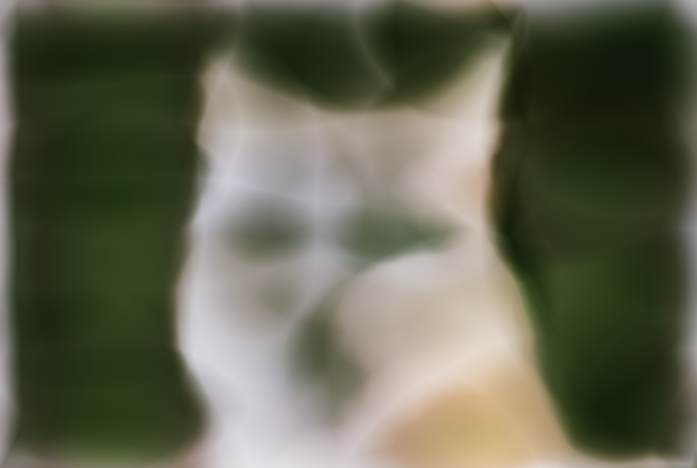
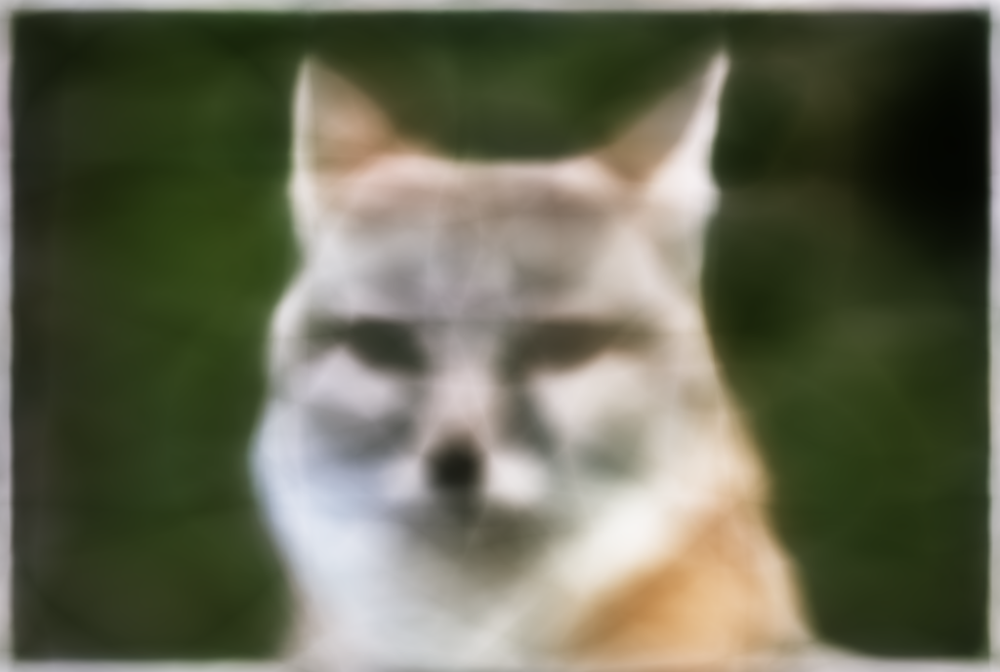
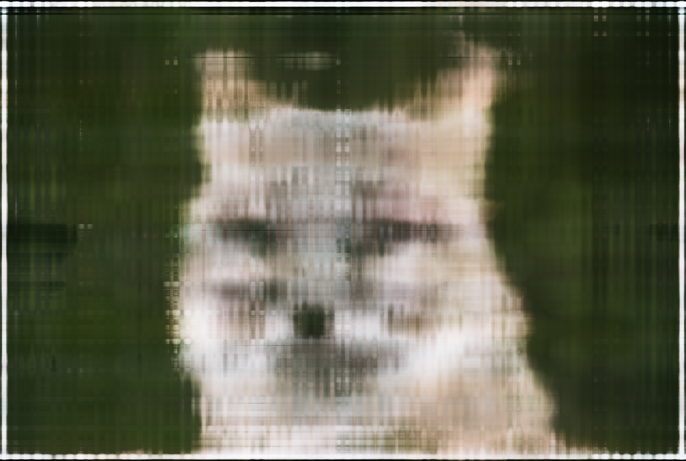
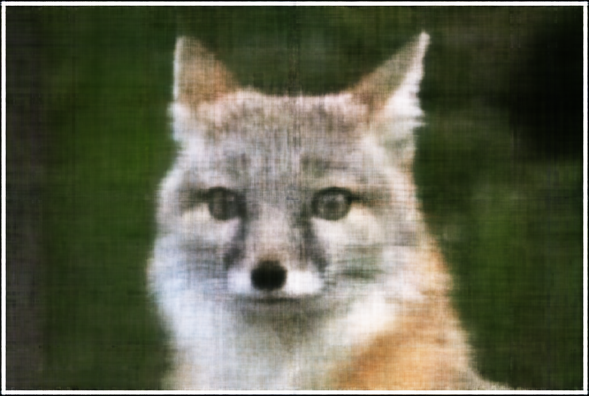
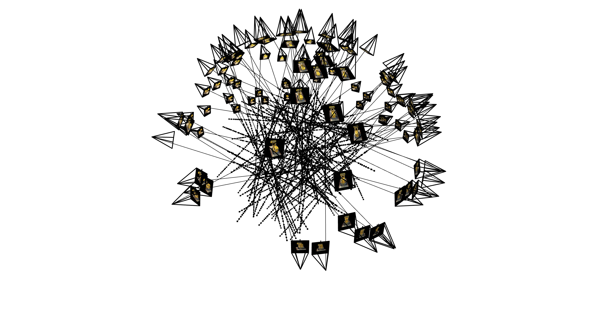
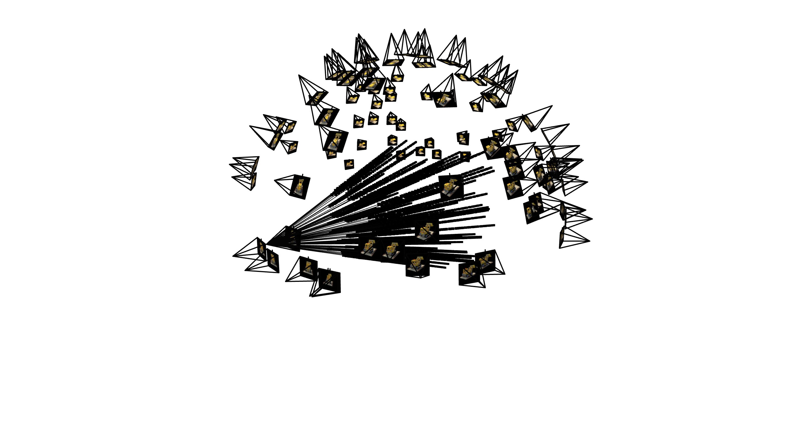

Nerf!
Project Overview
Reconstructing 3D from 2D images using NeRF
Part 0: Figuring out image to world coordinates
Understanding Coordinate Systems
The idea behind this 0th part is that we'll need to calculate the intrinsics of our camera. The intrinsic of a pinhole camera are the focal lengths in the x and y direction, as well as where the pinhole camera is centered in pixel coordinates on the image (ideally the center of the image). We can do this by collecting a bunch of images that have an overlapping feature, the Aruco tag, and matching up where the Aruco tag is in world space and where it is in the pixel space. We'll then throw it into a function that automatically solves for the intrinsics of our camera.
We'll now need to solve for the cameras pose in "world space". Because we have a collection of images that all contain an aruco tag, we can center the world origin around the top left corner of this aruco tag. This overlapping feature allows for epi-polar geometry and an estimation of depth from the feature we are taking an image of (the Aruco tag). Plugging in these points from the image to the function solvePnP() solves for both a rotation and translation matrix, to move from the world coordinate system to the pinhole camera coordinate system. However this PnP function solves the world-to-camera matrix, rather than the camera-to-world matrix. We can get around this by simply taking the inverse of the matrix.
After getting the c2w matrix (camera-to-world) for each image, and knowing the camera intrinsics, we can apply that directly on each image to create a 3d frestum of the object we are taking a photo of.
Part 1: Training small Neural Field on 2D Image
For this part, we'll try to train a NN to predict colors simply on pixel coordinate values. While this seems a bit ridiculous, given that we'll be overtraining on one image, this is exactly what we need for NeRF, since NeRF is trained directly on the image set specifically for that scene.
However, this problem can be quite tricky. Even though we want to overtrain on one image, we want to get high-frequency components which are hard to capture simply using a linear network. The network will have a hard time predicting different colors between extremely close points. We can avoid this problem by increasing the dimensionality of the pixel coordinates using sinusoidal positional encoding. This means extremely close points in pixel coordinates may be easier to discern in the fourier space.
Here is the sinusoidal positional encoding we will be doing:
\[PE(x) = \{x, sin(2^0\pi x), cos(2^0\pi x), sin(2^1\pi x), cos(2^1\pi x), ..., sin(2^{L-1}\pi x), cos(2^{L-1}\pi x)\}\]
We'll use this image for training

The MLP

source: cs180 project spec
The model is four layers deep with the first three layers having an output dimension size of 256 and the last layer having an output dimension size of 3. This output will predict the rgb for the pixel inputted. We can backprop based on the mean squared error between the predicted color at that point and the actual color.
Hyperparameters:
num_epochs = 1000
batchSize = 10000
L = 10 (positional encoding layers)
Adam gradient descent with lr = 0.001
PSNR is a great way of measuring how well our model is predicting the color. Its defined as:
\[PSNR = 10 \cdot log_{10}\left(\frac{1}{MSE}\right)\]
Here is what the PSNR looks like after training
We can also visualize what our model is doing over time
epoch 0
epoch 100
epoch 200
epoch 500
epoch 700
epoch 800
epoch 1000
We can also visualize what our fox looks like for our different hyperparameters, keeping batchsize and epoch length the same.
| Layer = 16 | Layer = 128 | |
|---|---|---|
| PE = 3 |  |  |
| PE = 10 |  |  |
Its interesting to see that the change in positional encoding allows for higher frequencies (more details) in the image, while deeper layers highlights the main contours of the fox (lower frequencies).
Personal Image
For the second part of this project, I'll be working with a lego set of SF. Here is the Neural Field captured on one image from the dataset.
epoch 100
epoch 200
epoch 300
epoch 400
epoch 600
epoch 800
ground truth
epoch 1000
Part 2: NeRF
2.1 Rays from Cameras
The main idea behind nerf is that we'll shoot rays out from each pinhole camera, sample points along the ray, and take the expectation of those predicted colors with respect to density. But we first need to figure out how to shoot out rays from our camera.
We'll start off simple, moving something from the camera space to the world space, by simply multiplying our c2w by a camera coordinate. It's important to note that our c2w matrix is actually 4x4, since translations are non-linear in 3d space. Therefore, we'll need to append a 1 to the point in camera coordinates in order for dimensions to work out.
\[\begin{align} \begin{bmatrix} x_w \\ y_w \\ z_w \\ 1 \end{bmatrix} = \begin{bmatrix} \mathbf{R}_{3\times3} & \mathbf{t} \\ \mathbf{0}_{1\times3} & 1 \end{bmatrix} \begin{bmatrix} x_c \\ y_c \\ z_c \\ 1 \end{bmatrix} \end{align}\]
The next part we need to do is move from pixel space to camera space. Multiplying our intrinsics matrix by camera coordinates moves us directly into scaled pixel space (assuming a pinhole camera, the optical-axis from the object will scale to where it is on our image). To move from pixel to camera coordinates, we can simply multiply both sides by the inverse of our intrinsics matrix.
\[\begin{align} \mathbf{K} = \begin{bmatrix} f_x & 0 & o_x \\ 0 & f_y & o_y \\ 0 & 0 & 1 \end{bmatrix} \end{align}\]
\begin{align} s \begin{bmatrix} u \\ v \\ 1 \end{bmatrix} = \mathbf{K} \begin{bmatrix} x_c \\ y_c \\ z_c \end{bmatrix} \end{align} \begin{align} \mathbf{K^{-1}} s \begin{bmatrix} u \\ v \\ 1 \end{bmatrix} = \begin{bmatrix} x_c \\ y_c \\ z_c \end{bmatrix} \end{align}
Each c2w matrix has a translation component that maps from the origin to the pinhole camera in world-coordinates. We'll use this vector as the origin for the ray. Then we'll sample a point from our image, in pixel space, move it to camera coordinates assuming s = 1 (the ray is of length 1), and finally move it to world coordinates using the above transformations. With that new world point, we can get the direction of this vector by subtracting the origin of the ray from this new direction, and finally normalizing it to allow for easier scaling in the future.
\[\mathbf{r_o} = \mathbf{t}\]
\[\begin{align} \mathbf{K^{-1}} 1 \begin{bmatrix} u \\ v \\ 1 \end{bmatrix} = \begin{bmatrix} x_c \\ y_c \\ z_c \end{bmatrix} \end{align} \]
\[\begin{align} \begin{bmatrix} x_w \\ y_w \\ z_w \\ 1 \end{bmatrix} = \begin{bmatrix} \mathbf{R}_{3\times3} & \mathbf{t} \\ \mathbf{0}_{1\times3} & 1 \end{bmatrix} \begin{bmatrix} x_c \\ y_c \\ z_c \\ 1 \end{bmatrix} \end{align}\]
\begin{align} \mathbf{r}_d = \frac{\begin{bmatrix} x_w \\ y_w \\ z_w \end{bmatrix} - \mathbf{r}_o}{||\begin{bmatrix} x_w \\ y_w \\ z_w \end{bmatrix} - \mathbf{r}_o||_2} \end{align}
With this, we can now visualize a ray since we have its origin and direction.
Sampling
Now that we have this ray in world coordinates, points along this ray are simply given by \(\mathbf{x} = \mathbf{R}_o + \mathbf{R}_d * t\). We can now create a line for t, starting at where we want to start sampling our points on this ray, in world coordinates, and where we want to stop sampling, and chop it into \(\mathbf{N}\) even segments. We'll then add small perturbations along each segment of t, by sampling a random number between 0 and 1, multiplying it by how large each segment of t is and adding that to each segment of t. The width of each segment of t is given by \[\mathbf{width} = \frac{\mathbf{far} - \mathbf{near}}{\mathbf{N}}\]
where \(\mathbf{N}\) is the number of samples along the Ray.
Sampling a total of 100 rays from training images:
And here is what 100 rays looks like from one image:
Data Loader
The data loader I created takes in an image dataset, a c2w dataset, the intrinsics matrix, and an index to create a meshgrid for. The function sampleRays(N) samples M images (which I chose to be the length of the dataset), and N//M total rays. The output from sample rays is of dimension of (\(\mathbf{M} * \mathbf{N}//\mathbf{M}, 3\)) of ray origins, ray directions, and ground truth colors from the pixel coordinates sampled. Later (not within the function), for each of those ray origins and ray directions, we'll sample 64 points, which will have output dimensionality (\(\mathbf{M} * \mathbf{N}//\mathbf{M}, 64, 3\))
NeRF Model Architecture

NeRF is quite a large model so the specifics are shown here. We concatenate our input ocassionally in order to prevent vanishing gradients when moving through our large network. The important things is to positionally encode the sampled points (depth = 10), as well as each ray direction (depth = 4). The outputs for each sampled point will be a color as well as a density.
Volumetric Rendering
Volumetric Rendering will be the part where we figure out the predicted color from points sampled along a ray, and allow us to compute the loss from the ground truth. This is the equation that I will walk through.
\begin{align} \hat{C}(\mathbf{r})=\sum_{i=1}^N T_i\left(1-\exp \left(-\sigma_i \delta_i\right)\right) \mathbf{c}_i, \text { where } T_i=\exp \left(-\sum_{j=1}^{i-1} \sigma_j \delta_j\right) \end{align}
\begin{align}\sigma_i = \text{density of point }i \end{align} \begin{align}\mathbf{c}_i = \text{predicted color of point }i \end{align} \begin{align}\delta = \text{step size between sampled points} \end{align}
\(T_i\) can be thought of how much light reaches us. For example, if the points before point \(i\) are very dense, then \(T_i\) will be very small so almost no light will reach us and thus we shouldn't be able to see that point as well. This equation \(\left(1-\exp \left(-\sigma_i \delta_i\right)\right)\) captures the opacity of point \(i\). If the point is very dense, then our opacity should be close to 1, and thus we should assign more importance to that color being visible. We can then calculate the mean squared error between all predicted colors from the actual color, and backprop our color and density.
The inputs to this are of shape (# of rays sampled, # of points sampled per ray, 3) for color, (# of rays sampled, # of points sampled per ray, 1) for density, and step size which I decided to just keep a constant \(\frac{\text{far} - \text{near}}{64}\), despite the distances between samples actually being slightly different.
Lego Example
Hyperparameters
Batch size = 10,000 rays, 64 points per ray
Iterations = 3000
Near = 2, Far = 6
Adam optimizer learning rate = 5e-4
In order to see how our model is generalizing, we'll be rendering the 0th validation image every 200 steps. Here is the ground truth:
ground truth
Training Progress On Validation Image
epoch 200

epoch 600
epoch 1400
epoch 1800
I actually forgot to save the image during the last iteration. However, the GIF that you will later see uses the full model.
Here is the PSNR curve on the validation set:
.png)
Rendering of the lego set from novel views
if the GIF isn't playing, reload the site
Lafufu example
running the same setup on a mock dataset provided by staff, we can get something like this
Hyperparameters:
num_epochs = 3000
batchSize = 10000 rays, 64 points per ray (ie ~640,000 points per batch)
L = 10 (positional encoding for world position)
l = 4 (positional encoding for direction)
Adam gradient descent with lr = 5e-4
near, far = 0.02, 0.5 meters
epoch 200
epoch 400
epoch 1000
epoch 1800
Own Example
However, the hard part isn't in the rendering step but rather in calibration and choosing hyper parameters.
Hyperparameters:
num_epochs = 3000
batchSize = 10000 rays, 64 points per ray (ie ~640,000 points per batch)
L = 10 (positional encoding for world position)
l = 4 (positional encoding for direction)
Adam gradient descent with lr = 5e-4
near, far = 0.2, 0.5 meters
Training Progress On Validation Image
epoch 200
epoch 800
epoch 1600
epoch 2400
ground truth

Final
Training MSE
Validation PSNR
gif of novel views